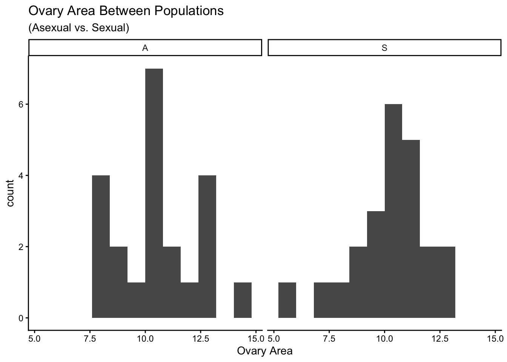
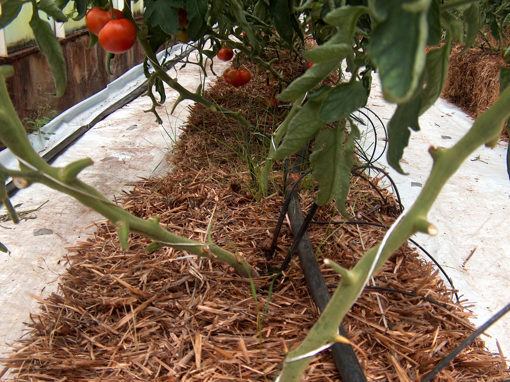

Copy and paste this into your R Console to start positpal, but replace FILENAME.Rmd with the name you are going to use for the .R or .Rmd file you are going to upload (for this challenge, rename the template first, e.g. Group_#_CC2.Rmd, and use that exact name). Do not include it as a code chunk.
Before you run it: open the project folder for this challenge in Positron (File → Open Folder…) so that it is your working directory, save this file in that folder under the name you will upload, and check that autosave is on (File → Auto Save). The first time you use positpal on a computer, start() will ask you to run positpal::accept_eula() once; do that, then run the start() line again. After a few minutes of work, check in the Explorer pane that the .capture/snaps folder inside your project is filling up with files. If it is not, or if start() refuses to record, run positpal::doctor("FILENAME.Rmd") and bring the output to tutorial or office hours. Run the start() line again at the start of every session you spend on this file.
YAML header
Replace the single output: html_document line in the YAML header above with the multi-line version from Chapter 5 (YAML Header) so that the knitted report has a floating table of contents and numbered sections. Once you do, every # heading in this document is numbered automatically — do not type the numbers yourself.
Group members
Write the group members as an ordered list (Chapter 5, Lists). For each member give the name in bold, then the student number, and then a sub-item containing a clickable link to that member’s GitHub repository, written with Markdown link syntax (Chapter 5, Links).
The chunk below sets the default options for every other chunk in the document. Add the chunk option (Chapter 5, Code Chunk Arguments) that runs it without showing either the code or any output in the knitted report.
Data dictionary
Write a Markdown table (Chapter 5, Tables) with three columns — variable, description, units — and one row for each of these variables from the Coding Challenge 1 dataset: population_type, ovary_width, ovary_height, flower_number. Use the pipes and dashes format from the chapter, not R code.
Markdown Table - Coding Challenge 1 Data
Variable
Description
Units
Population Type
Is the Pop A or S Type (count)
NA
Ovary Width
The width of the pops ovaries
mm
Ovary Height
The height of the pops ovaries
mm
Flower Number
The number of flowers(count)
NA
Import and clean the data
Copy A1_Data_Excel.csv from your Coding Challenge 1 project into this project’s data folder. In the chunk below, import it with read.csv(), keep the appropriate rows and columns (as you did in Coding Challenge 1), and add the ovary_area column (Chapter 3, New Columns). Save the cleaned data as cc1_data.
populationtype populationname latitude longitude ovarywidth ovaryheight
1 A MI M2 43.264 -84.884 3.62 3.48
2 A MI M3 45.615 -84.689 3.61 3.59
3 A MI M5 42.418 -84.013 2.98 2.68
4 A MI M7 45.623 -84.705 3.48 4.08
5 A MI M8 43.350 -85.935 3.43 2.94
6 A MI M9 45.600 -84.709 3.87 3.11
averageaugusttemperature flowernumber ovary_area
1 21.0 NA 12.5976
2 18.3 NA 12.9599
3 20.8 NA 7.9864
4 18.2 NA 14.1984
5 20.1 NA 10.0842
6 18.2 NA 12.0357
#Import Libraries library(ggplot2)library(knitr)
Now document the inspection commands you used (class(), dim(), str(), head(), tail()) in the chunk below. Add the chunk option that shows this code in the report but does not run it, so that the reader can see what you checked without pages of output.
Write the formula you used for ovary area as a full-line equation in LaTeX (Chapter 5, Equations), using \times for multiplication. Then, in a sentence of ordinary text, state its units using an in-line equation with a superscript.
\(Ovary Area = Ovary Width \times Ovary Length\) The units for Ovary Area are \(mm^2\) The units for Ovary Width and Ovary Length are both \(mm\)
Dynamic table
a. In the chunk below, calculate the mean ovary_area for each population_type with aggregate() (Chapter 3, Other Functions) and save the result as area_means. This chunk should run but be completely hidden in the report.
b. Display area_means with kable() from the knitr package (Chapter 5, Dynamic Tables), including a caption. This chunk should show the table but not the code.
Mean Ovary Area across Asexual (A) and Sexual (S) Population Types
populationtype
ovary_area
A
10.58363
S
10.27290
Embedded graph
Make a histogram of ovary_area with ggplot() + geom_histogram() (Chapter 4), choosing a sensible binwidth and using facet_wrap() to give each population_type its own panel, labs() for axis labels with units and a title, and theme_classic() (Chapter 7). This chunk should show the graph but not the code, and it should not print package start-up messages (see the chunk header used under Embed Graphs in Chapter 5).

Image
Embed an image of the study species, Solanum pimpinellifolium, with Markdown image syntax (Chapter 5, Images). Save the image file in an images folder inside your project folder and use a relative path, exactly as the chapter does, so that the image is pushed to GitHub with everything else. The text in the square brackets is the caption. Below the image, give the source as a Markdown link to the page you took it from.

Figure1.1 Image of the Solanum Pimpinellifolium species
Your project folder is a GitHub repository (Chapter 6). Before you submit:
Edit the README.md in your repository (Chapter 6, README.md): add a header with the repository name and one sentence saying what the repository contains.
Make sure the repository contains the .Rmd, data/A1_Data_Excel.csv, images/ with your photo, and the knitted .html, and that everything is committed and pushed.
Paste the SHA of your final commit (Chapter 6, Timeline; the 7-character code shown beside each commit on GitHub) below, formatted as in-line code with back-ticks.
Final commit SHA:
DO THIS LAST
When your document is finished, knitted and pushed to GitHub, copy and paste this into the R Console to stop positpal and create your coding log. Do not include it as a code chunk.
export_capture() prints the name and location of the my-capture-YYYYMMDD-HHMMSS.zip it creates beside this file. Each group member uploads their own .zip to the “CC2 — Coding Log (individual)” dropbox on OnQ; the group’s .Rmd and knitted .html go to your section’s TUT02-CC2 or TUT03-CC2 folder. Submissions without the log are incomplete. If export_capture() fails, zip the .capture folder yourself and upload that instead. Do not commit the .capture folder or the .zip to GitHub (add a .capture/ line to your repository’s .gitignore).